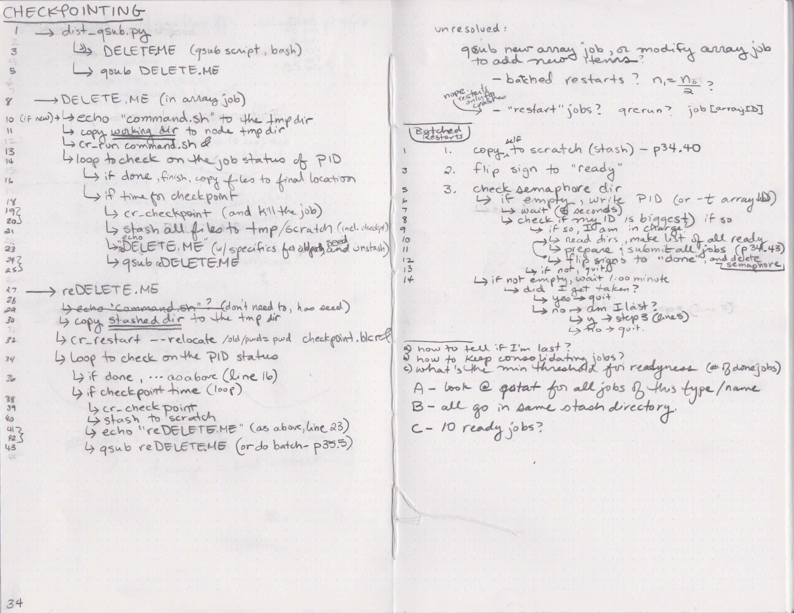
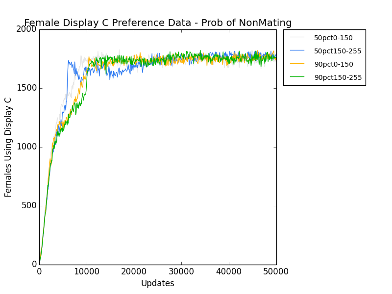
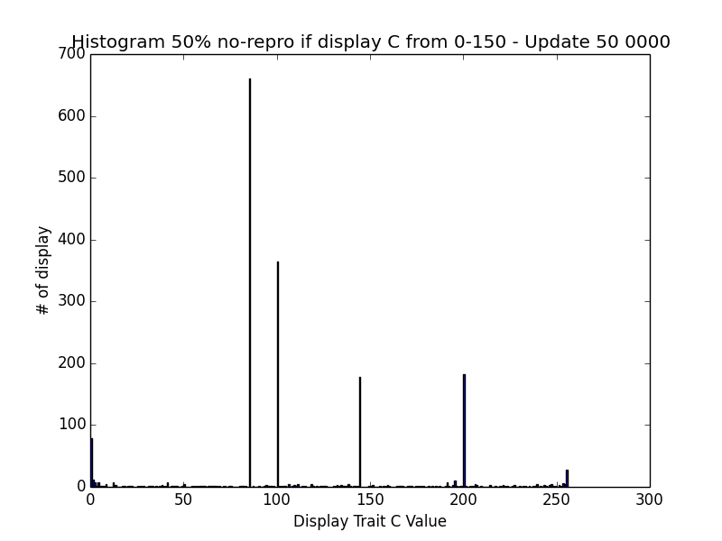
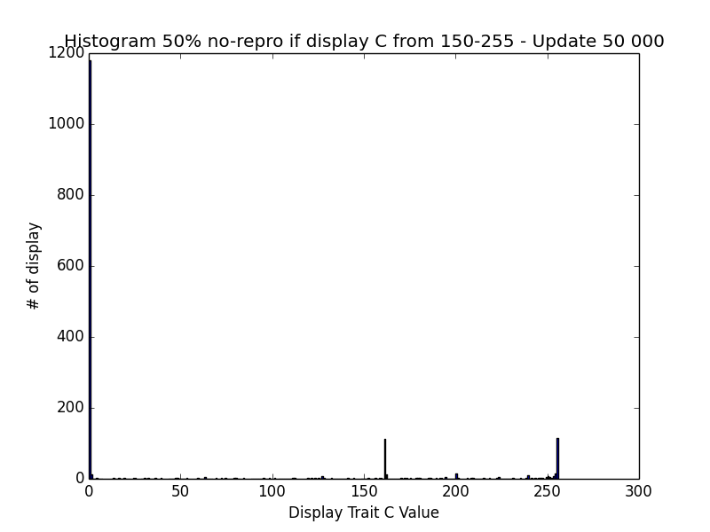
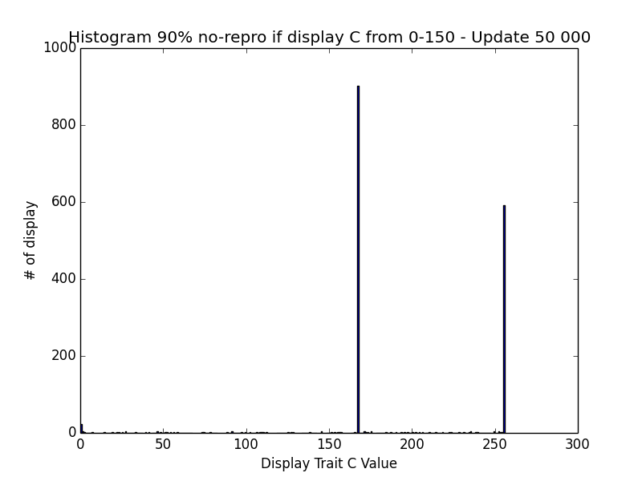
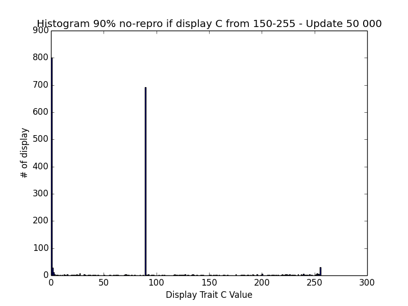
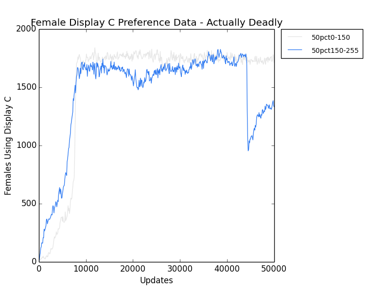
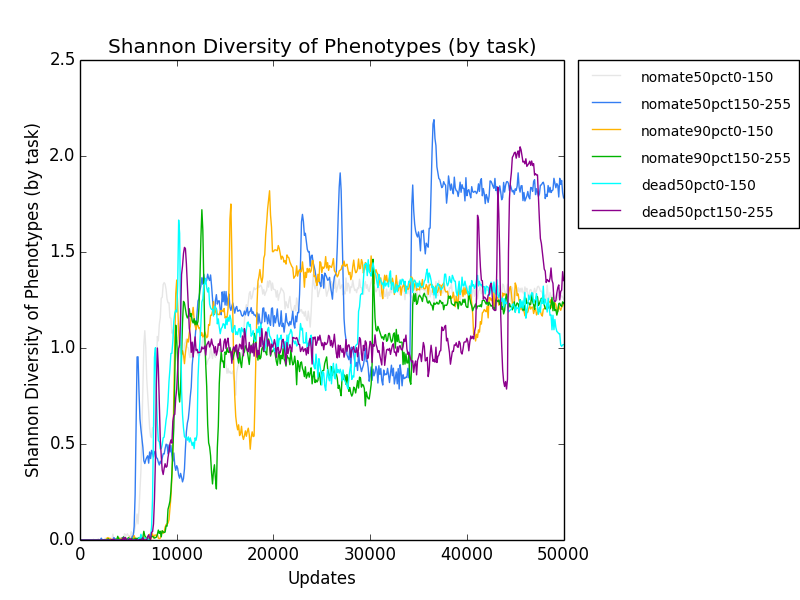
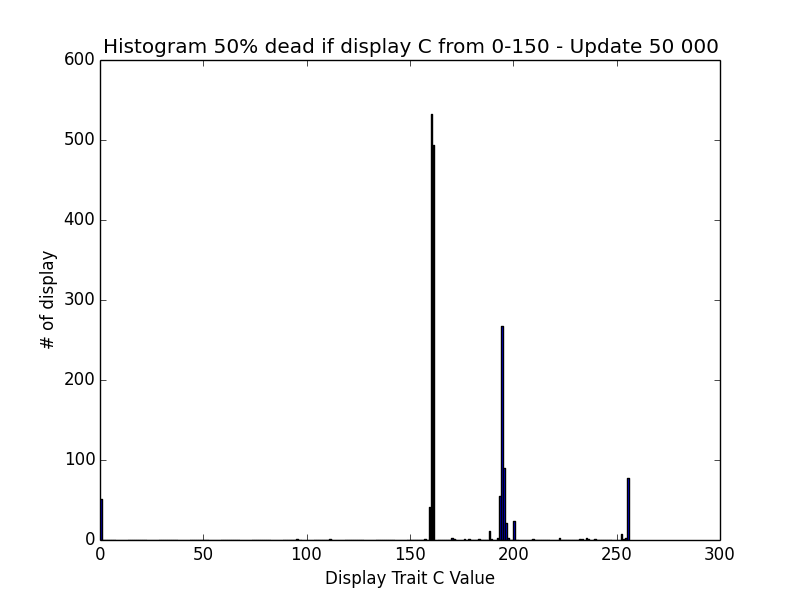
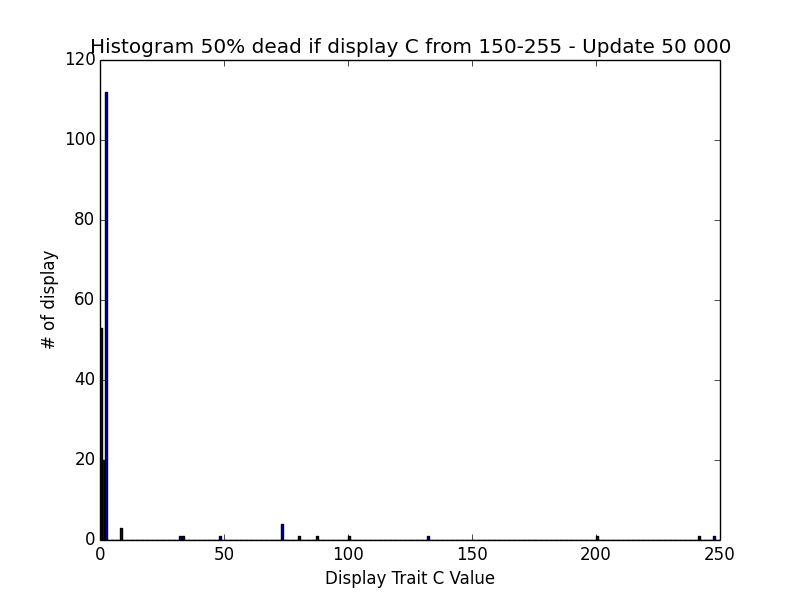

New weekly log!
This weekend, I spent a ton of time working on the qsub script. It now emails you when you submit a job. It's sitting in there right now, in sullen preparation for the checkpointing, which is really not going well. Here's photos of the algorithm.
I'm not going to implement this right now, though, since it's kindof a pain in the ass, and I don't want to devote my entire block of working time to it. So, back-burner until next week.

Ok, I'm fucking re-doing these, because my directory was a mess. I need to understand what the hell was happening.
Some features:
Following runs are Split deadly ranges (0-150,150-255) - 50% probability
rosiec@Weir:~/Dropbox/School_Docs/Research/AvidaDev/avida_dev_sexual_selection_testing/deadly_range$ ./avida -set ENVIRONMENT_FILE environment_braidedresources.cfg -set CONT_REC_REGS 0 -set MODULE_NUM 10 -set DISPLAY_C_DEADLY_RANGE_PROB 0.5 -set MODULE_NUM 10 -set DISPLAY_C_DEADLY_RANGE_BEGIN 0 -set DISPLAY_C_DEADLY_RANGE_END 150 -set DATA_DIR data__braided_10ptCO_NonContig_Prob50_deadly0-150
rosiec@Weir:~/Dropbox/School_Docs/Research/AvidaDev/avida_dev_sexual_selection_testing/deadly_range$ ./avida -set ENVIRONMENT_FILE environment_braidedresources.cfg -set CONT_REC_REGS 0 -set MODULE_NUM 10 -set DISPLAY_C_DEADLY_RANGE_PROB 0.5 -set MODULE_NUM 10 -set DISPLAY_C_DEADLY_RANGE_BEGIN 150 -set DISPLAY_C_DEADLY_RANGE_END 255 -set DATA_DIR data__braided_10ptCO_NonContig_Prob50_deadly150-255
Following runs are Split deadly ranges (0-150,150-255) - 90% probability
rosiec@Weir:~/Dropbox/School_Docs/Research/AvidaDev/avida_dev_sexual_selection_testing/deadly_range$ ./avida -set ENVIRONMENT_FILE environment_braidedresources.cfg -set CONT_REC_REGS 0 -set MODULE_NUM 10 -set DISPLAY_C_DEADLY_RANGE_PROB 0.9 -set MODULE_NUM 10 -set DISPLAY_C_DEADLY_RANGE_BEGIN 0 -set DISPLAY_C_DEADLY_RANGE_END 150 -set DATA_DIR data__braided_10ptCO_NonContig_Prob90_deadly0-150
rosiec@Weir:~/Dropbox/School_Docs/Research/AvidaDev/avida_dev_sexual_selection_testing/deadly_range$ ./avida -set ENVIRONMENT_FILE environment_braidedresources.cfg -set CONT_REC_REGS 0 -set MODULE_NUM 10 -set DISPLAY_C_DEADLY_RANGE_PROB 0.9 -set MODULE_NUM 10 -set DISPLAY_C_DEADLY_RANGE_BEGIN 150 -set DISPLAY_C_DEADLY_RANGE_END 255 -set DATA_DIR data__braided_10ptCO_NonContig_Prob90_deadly150-255
rosiec@Weir:~/Dropbox/School_Docs/Research/AvidaDev/avida_dev_sexual_selection_testing/deadly_range$ python ~/Dropbox/School_Docs/Research/research_scripts/quickplot.py -x Updates --xtick_multiplier=100 -y "Females Using Display C" -t "Female Display C Preference Data" female_preference_data \ female_mate_preference_data.dat 11 "data__braided_10ptCO_NonContig_Prob50_deadly0-150/" "50pct0-150" \ female_mate_preference_data.dat 11 "data__braided_10ptCO_NonContig_Prob50_deadly150-255/" "50pct150-255" \ female_mate_preference_data.dat 11 "data__braided_10ptCO_NonContig_Prob90_deadly0-150/" "90pct0-150" \ female_mate_preference_data.dat 11 "data__braided_10ptCO_NonContig_Prob90_deadly150-255/" "90pct150-255"

To keep an eye on it, generate a plot of the Display C trait adoption by the females. This regenerates the above graph, but periodically.
rosiec@Weir:~/Dropbox/School_Docs/Research/AvidaDev/avida_dev_sexual_selection_testing/deadly_range$ for i in {0..100}; do python ~/Dropbox/School_Docs/Research/research_scripts/quickplot.py -x Updates --xtick_multiplier=100 -y "Females Using Display C" -t "Female Display C Preference Data" female_preference_data female_mate_preference_data.dat 11 "data__braided_10ptCO_NonContig_Prob50_deadly0-150/" "50pct0-150" female_mate_preference_data.dat 11 "data__braided_10ptCO_NonContig_Prob50_deadly150-255/" "50pct150-255" female_mate_preference_data.dat 11 "data__braided_10ptCO_NonContig_Prob90_deadly0-150/" "90pct0-150" female_mate_preference_data.dat 11 "data__braided_10ptCO_NonContig_Prob90_deadly150-255/" "90pct150-255"; sleep 30; done
And the below, generates a histogram graph for every updated thingy in each of the run directories. This is done for every directory.
rosiec@Weir:~/Dropbox/School_Docs/Research/AvidaDev/avida_dev_sexual_selection_testing/deadly_range/data__braided_10ptCO_NonContig_Prob50_deadly150-255$ for i in {1..100}; do \ while [ ! -f mating_display_c_histogram-$i"000".dat ]; do sleep 5; done; cat mating_display_c_histogram-$i"000".dat; tail -1 mating_display_c_histogram-$i"000".dat | cut -d " " -f 6- > choosy_female_only.dat; python ~/Dropbox/School_Docs/Research/research_scripts/graph_generation/histogram_from_csv.py -t "Histogram 50% no-repro if display C from 150-255" -x "Display Trait C Value" -y "# of display" -s " " 150-255_90pct_choosy_female_only_mating_display_c.png choosy_female_only.dat; done;
50% non-mating

90% non-mating

So, it does shove over when the penalty is big enough, BUT:
Ok, I've modified Avida to actually BE deadly in those ranges:
rosiec@Weir:~/Dropbox/School_Docs/Research/AvidaDev/avida_dev_sexual_selection_testing/deadly_range$ ./avida_actuallydeadly -set ENVIRONMENT_FILE environment_braidedresources.cfg -set CONT_REC_REGS 0 -set MODULE_NUM 10 -set DISPLAY_C_DEADLY_RANGE_PROB 0.5 -set MODULE_NUM 10 -set DISPLAY_C_DEADLY_RANGE_BEGIN 0 -set DISPLAY_C_DEADLY_RANGE_END 150 -set DATA_DIR data__braided_10ptCO_NonContig_Prob50_actuallydeadly0-150
rosiec@Weir:~/Dropbox/School_Docs/Research/AvidaDev/avida_dev_sexual_selection_testing/deadly_range$ ./avida_actuallydeadly -set ENVIRONMENT_FILE environment_braidedresources.cfg -set CONT_REC_REGS 0 -set MODULE_NUM 10 -set DISPLAY_C_DEADLY_RANGE_PROB 0.5 -set MODULE_NUM 10 -set DISPLAY_C_DEADLY_RANGE_BEGIN 150 -set DISPLAY_C_DEADLY_RANGE_END 255 -set DATA_DIR data__braided_10ptCO_NonContig_Prob50_actuallydeadly150-255
rosiec@Weir:~/Dropbox/School_Docs/Research/AvidaDev/avida_dev_sexual_selection_testing/deadly_range$ for i in {0..100}; do python ~/Dropbox/School_Docs/Research/research_scripts/quickplot.py -x Updates --xtick_multiplier=100 -y "Females Using Display C" -t "Female Display C Preference Data - Actually Deadly" actually_deadly_female_preference_data \ female_mate_preference_data.dat 11 "data__braided_10ptCO_NonContig_Prob50_actuallydeadly0-150/" "50pct0-150" \ female_mate_preference_data.dat 11 "data__braided_10ptCO_NonContig_Prob50_actuallydeadly150-255/" "50pct150-255"; sleep 30; done

rosiec@Weir:~/Dropbox/School_Docs/Research/AvidaDev/avida_dev_sexual_selection_testing/deadly_range$ for i in {0..100}; do python ~/Dropbox/School_Docs/Research/research_scripts/quickplot.py -x Updates --xtick_multiplier=100 -y "Shannon Diversity of Phenotypes (by task)" -t "Shannon Diversity of Phenotypes (by task)" shannon_diversity \ phenotype_count.dat 3 "data__braided_10ptCO_NonContig_Prob50_deadly0-150/" "nomate50pct0-150" \ phenotype_count.dat 3 "data__braided_10ptCO_NonContig_Prob50_deadly150-255/" "nomate50pct150-255" \ phenotype_count.dat 3 "data__braided_10ptCO_NonContig_Prob90_deadly0-150/" "nomate90pct0-150" \ phenotype_count.dat 3 "data__braided_10ptCO_NonContig_Prob90_deadly150-255/" "nomate90pct150-255" \ phenotype_count.dat 3 "data__braided_10ptCO_NonContig_Prob50_actuallydeadly0-150/" "dead50pct0-150" \ phenotype_count.dat 3 "data__braided_10ptCO_NonContig_Prob50_actuallydeadly150-255/" "dead50pct150-255"; sleep 30; done

rosiec@Weir:~/Dropbox/School_Docs/Research/AvidaDev/avida_dev_sexual_selection_testing/deadly_range/data__braided_10ptCO_NonContig_Prob50_actuallydeadly0-150$ for i in {1..100}; do \ while [ ! -f mating_display_c_histogram-$i"000".dat ]; do sleep 5; done; cat mating_display_c_histogram-$i"000".dat; tail -1 mating_display_c_histogram-$i"000".dat | cut -d " " -f 6- > choosy_female_only.dat; python ~/Dropbox/School_Docs/Research/research_scripts/graph_generation/histogram_from_csv.py -t "Histogram 50% dead if display C from 0-150 - Update $i 000" -x "Display Trait C Value" -y "# of display" -s " " 0-150_50pct_choosy_female_only_mating_display_c.png choosy_female_only.dat; done;

So, easily shoves over at 50% deadly. I could drop it to less. But I think this is a dead end, since it was only proving that my shit worked. :P
Got a good suggestion from Charles about how to do my checkpointing, have a job, that is held, then release (unhold) each one as needed. I was 90% sure that wasn't possible, but it IS
Right, so I have no idea what to do next here. I need to collect my thoughts.
Do next:
dist_qsub.py
DELETE.ME (running in array job)
cpDELETE.ME (running in array job)